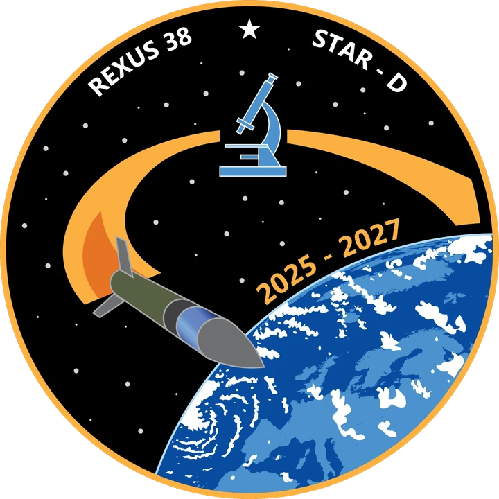
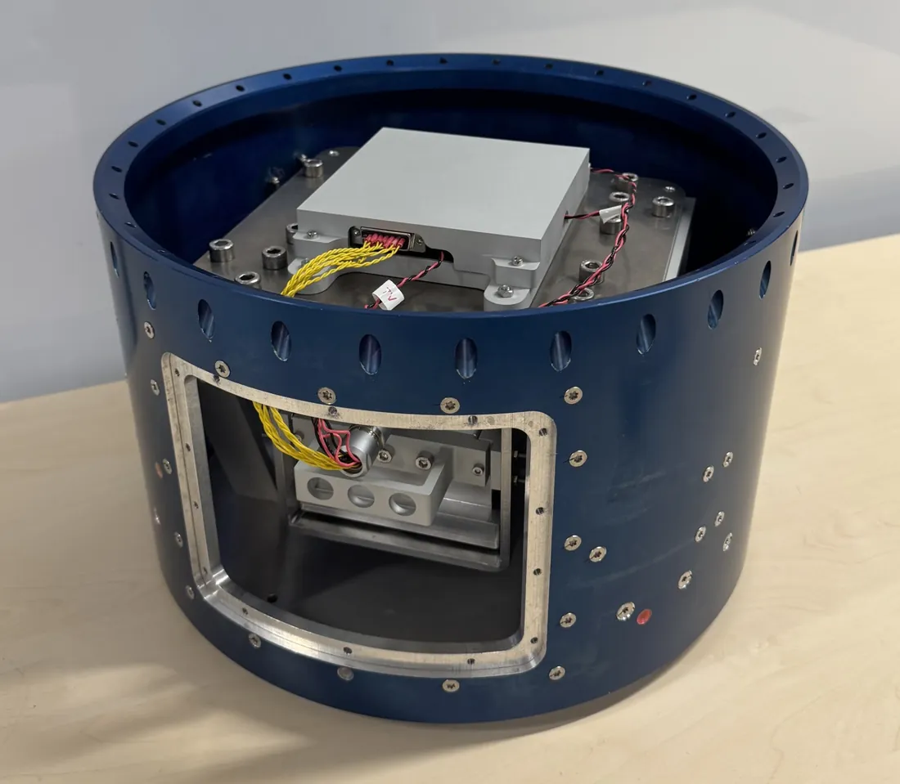
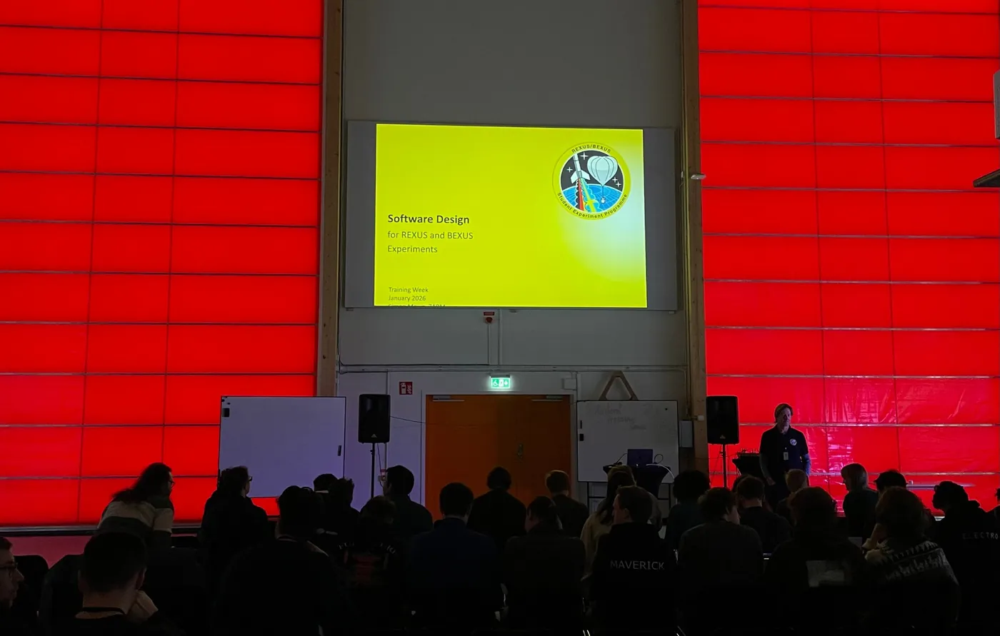
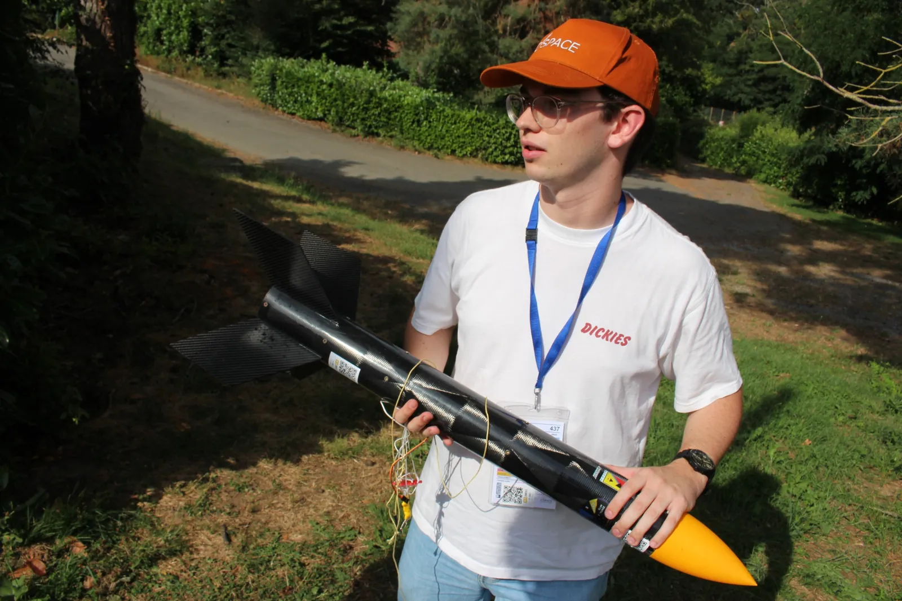
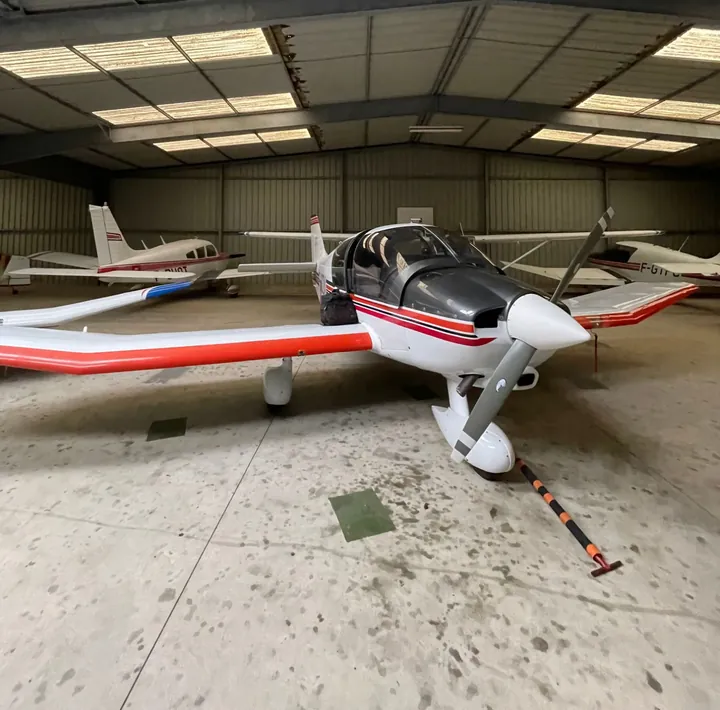

2023 → now · Paris
ESILV
Engineering degree, 4th year (Master 1) · Aerospace & Defence major
- Orbital mechanics, propulsion, embedded systems
- Digital Sovereignty & Defence minor
Project portfolio
Fourth-year aerospace and defence engineering student at ESILV, Paris. I am the Lead Software Engineer for STAR-D, a student experiment flying to 85 km on REXUS 38 from Esrange, Sweden, in March 2027.

REXUS 38 · 2025–2027
Space Test of Amoeba Response: Dictyostelium
STAR-D studies how microgravity affects phagocytosis in Dictyostelium amoebae. A microfluidic system handles the cells in flight while sensors and a camera record the experiment through the few minutes of weightlessness on a REXUS rocket.
I am responsible for the onboard segment: the software that runs on the experiment from power-on on the launch pad to recovery. It reads six sensors, records a camera, streams live telemetry to the ground station through the rocket's service module, and moves the experiment through its flight modes.
Flight profile
The plot follows your scroll, and the code panel shows the flight software I wrote for each stage, with comments shortened. The trajectory is a simple model; SODS at T−180 s, LO at T+0 and SOE at T+66 s are the real signal times.
What I've built
The links my flight software drives, and the data flow I designed to run across them.
External entityProcessData store
Programme
The programme follows the milestones of a real space project, each one in a different place.
Final integration
The STAR-D experiment, integrated in its REXUS module. My contribution is the flight software and data-flow architecture that run it in flight.

Esrange · Jan 2026
Lectures, the PDR and a first week with the other Cycle 17 teams.

REXUS/BEXUS Cycle 17 teams at SSC Space during Training Week.

Part of the STAR-D team at SSC Space.

Software design lecture for REXUS and BEXUS experiments.
C'Space · LéoFly · 2025–2026
Two experimental mini-rockets built with LéoFly, ESILV's student aerospace association, for C'Space, the launch campaign run by CNES and Planète Sciences. Both were qualified by CNES controllers and flew.

Designed the avionics rack in CAD: a compact frame that holds the electronics boards inside a thin-diameter airframe.

Technical supervisor. Led a team of 8 students from design to flight; nominal recovery after flight.


I sit on the board of the association that runs these projects.
Paris · Melbourne
An aerospace engineering degree in Paris, an exchange semester in Melbourne, and an international upbringing that included the UAE and Ghana.
Engineering degree, 4th year (Master 1) · Aerospace & Defence major
Exchange semester · 50 credit points
Institut de La Tour, Paris · Baccalauréat with highest honours, seven years in the English section · 2016–2023
Off the clock: DJing and collecting vinyl, golf, swimming.


Pilot training
Initial training towards the Light Aircraft Pilot Licence (LAPL) at the Loire-Atlantique flying club, after the BIA, France's national aeronautics certificate.
Contact
I'm looking for a 4–5 month internship from April 2027 in flight software, avionics or space systems.